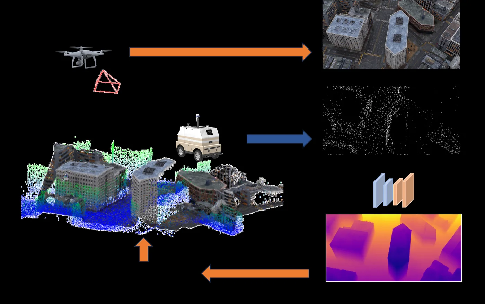
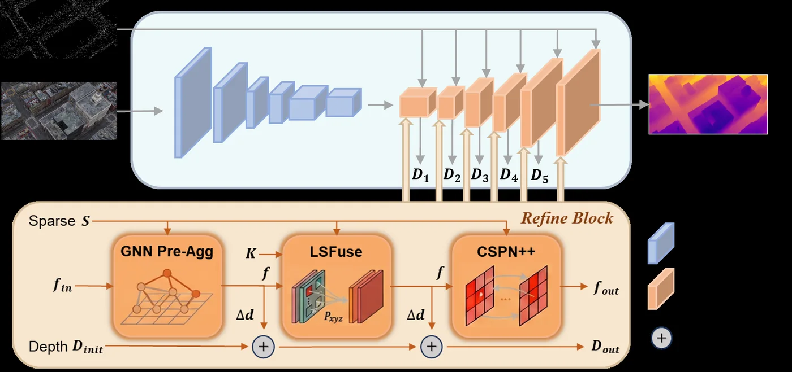
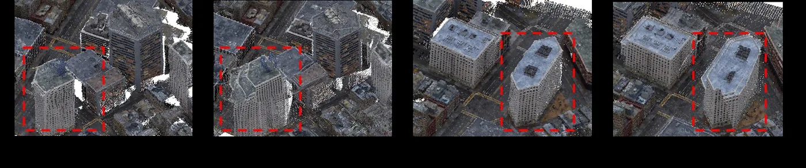

IROS 2026 · First authorIROS 2026 · 第一作者
RefineNet — cross-view depth completionRefineNet —— 跨视角深度补全
A drone sees the whole site but cannot measure it; a ground robot measures precisely but only what is under its wheels. RefineNet turns that pair into dense, metric aerial depth.无人机看得到全场，却量不出尺度；无人车量得准，却只看得到脚下。RefineNet 把两者结合，输出稠密的度量航拍深度。

Motivation动机
Aerial imagery is the fastest way to cover a large site, but a single camera only gives depth up to an unknown scale. Ground robots carry LiDAR that is metric but sparse, and they see the scene from below, not from the air.
The hard part is the viewpoint change: matching a top-down image against a ground-level point cloud means handling oblique geometry, occlusion and a large baseline at the same time.
航拍是覆盖大场景最快的方式，但单目相机给出的深度没有绝对尺度。地面机器人有精确但稀疏的 LiDAR，且只能从下往上看，看不到空中视角。
难点在于视角差异：把俯视图像和地平线高度的点云对应起来，要同时处理斜视几何、遮挡和大基线。
What I built做了什么
- A three-stage network where every stage predicts its own confidence, so unreliable regions get refined instead of trusted.
- A dynamic graph network that re-establishes cross-view correspondences as the relative pose changes.
- Sparse attention that carries ground LiDAR measurements through occlusions into the aerial image.
The output is dense metric depth, which feeds downstream 3D reconstruction of the whole site.
- 三阶段网络，每个阶段输出自己的置信度：不可靠的区域被继续精修，而不是被采信。
- 动态图网络，在相对位姿变化时重新建立跨视角对应。
- 稀疏注意力，把地面 LiDAR 测量穿过遮挡带到航拍图像上。
输出是稠密、带度量尺度的深度，直接服务整片场地的三维重建。

Results效果
Accepted at IROS 2026 as first-author work. The comparison below shows predicted depth against the baseline on the same aerial frames.
以第一作者被 IROS 2026 接收。下图是在同一批航拍帧上，与基线方法的深度预测对比。
